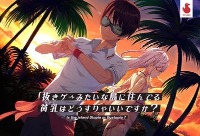

2023_8_9
开学的前几天，我第一次制作了这个日记网站。
首先让我记录一下假期所推的Galgame吧。
ハミダシクリエイティブ
这是我假期里推的第一款（应该？）废萌。
我还是一如既往的风格：上垒后就算结束！
剧情方面，废萌作而已没有太大的波澜。
故事以男主阴差阳错下抽签到学生会长职位作为开始，在顾问老师的帮助下以挽救缺席学生的名义
废萌作而已没有太大的波澜。总体上而言，男主在阴差阳错下抽签抽到学生会长职位，并邂逅四个缺席问题少女。
男主在收拾前学生会长留下来的烂摊子的同时与这四位问题少女开展的爱情喜剧。
故事逻辑上并没有硬伤，男主不断克服障碍，并收获女主角芳心。
四名女主都有特色，但我更喜欢常磐华乃捏，因为她x欲太强了。
素晴らしき日々～不連続存在～
电波作，但不算特别毒。这部游戏可谓是我的哲学启蒙作，为此我还买了
维根特斯坦的《逻辑哲学论》。
摘抄记录里面索引的一首诗：
我们的头脑比天空更辽阔
来，将二者对比着看一看
我们的思维可以轻易将这片广阔的天空完全容纳
然后……连你也可以
我们的头脑比海更深.
来，将蓝与蓝重叠瞧一瞧
我们的思维可以完全吸收大海
有如海绵吸收桶里的水一般
我们的头脑正好与上帝有着相同的重量
来，试试准确地量一量
若是有所不同，那便是
有如语言和声响的不同
这部作品即便前期电波精神污染折磨得我苦不堪言，但后期的文学意蕴却也足以让我流连忘返。
抜きゲーみたいな島に住んでる貧乳はどうすりゃいいですか？

极极极其搞怪的一个游戏，名字就足以看出它的鬼畜。
虽说有拔作字眼，但它却意外地是个剧情向作品！
我认为它只是将设定做得很鬼畜，但剧情核心却很常见：反抗，战斗，救赎以及恋爱。
这部作品所融进的梗元素也足以让我会心一笑。总得而言，这部作品为我带来了一段快乐的时光。
聊完Galgame，再谈谈假期中我对人生态度的改变：
这一假期算是一个小小的转折，虽然不及春节那次之大，但我认为也足以改变我的未来。
先前我只是认为我应该去上一所计算机大学，然后深造。
家里人告诉我深造会给我发工资，我也理所当然地认为深造也算是一总工作。
但近些时日我注意到深造学历所赚得的资金仅够维持我的温饱。
若是想要过清闲生活，深造并不是出路。
我将目光投向大企业，我努力进入大企业后也就好了吧？
可是996的现实又给了我迎头一棒。我不愿为996燃烧生命，过朝9晚不知道什么时候能下班的生活。
因此我心中便生起一个想法：莫不如创业吧？
没错，我产生了创业的梦想。
若想真正实现阶级跨越，那便只能创造自己的事业，让自己当老板。
首先我需要不断磨练自己，提高自己的竞争力。
我知道这路很长，但为了将来的自己尽量不被异化为机器，我必须要努力着。
噢对了，我忘记说还有一部gal了。まいてつ Last Run!!
不过也没什么好说的，因为在手机上的体验极差，而且也没推完。
它就留到我毕业后再继续吧。